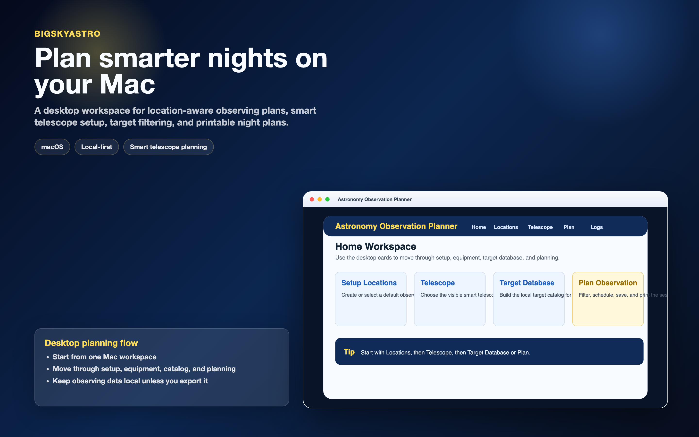
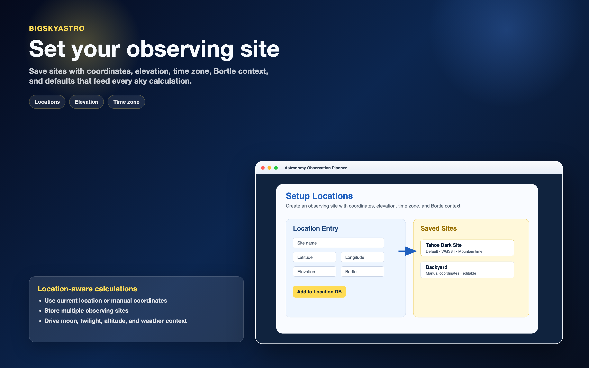
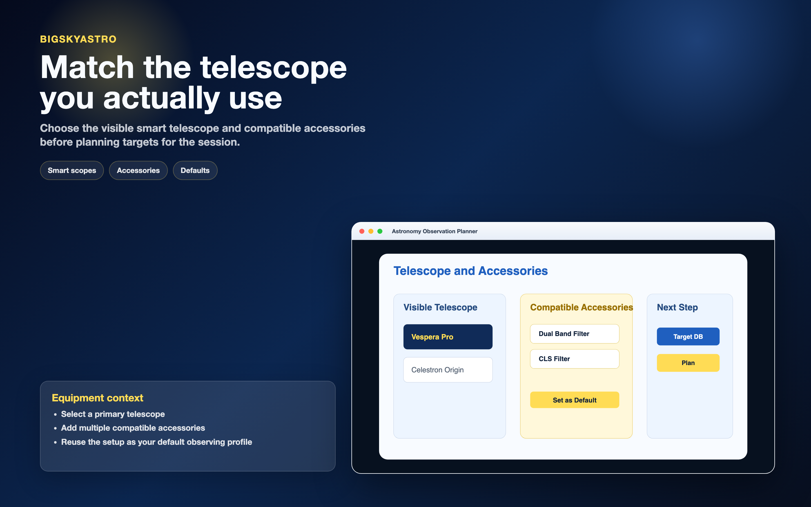
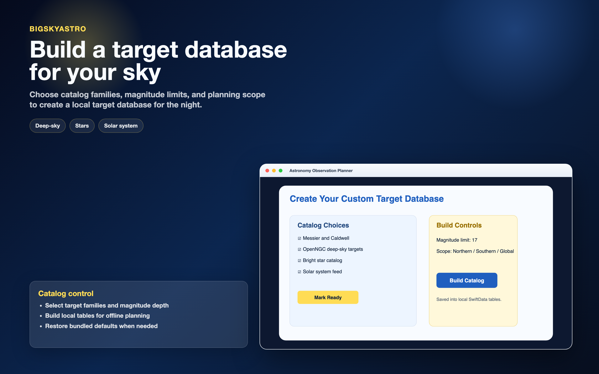
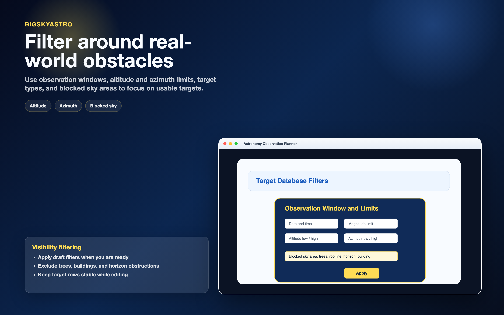
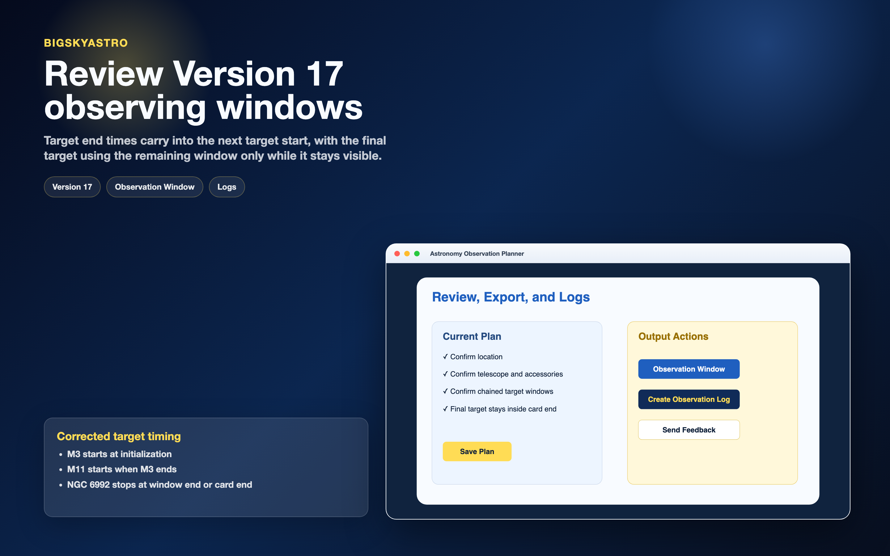
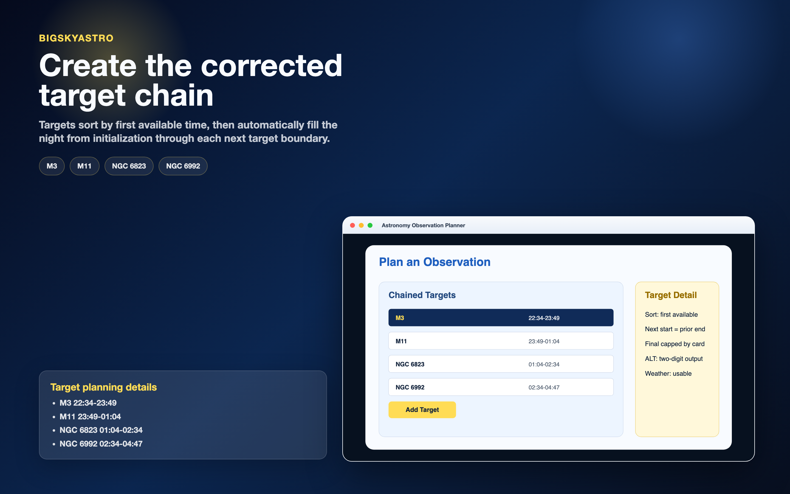
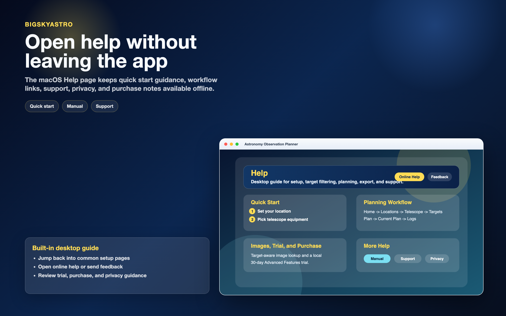
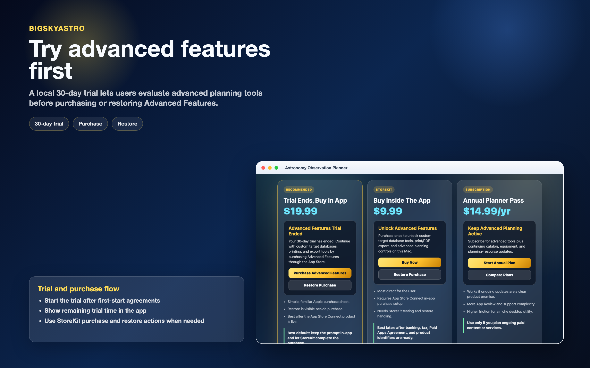

Timing Correction
The planner now treats the selected observation window as a night chain. The first selected target starts at initialization. Each next target starts at its first visible/card start and closes the previous target. The final target uses the remaining observing window only while it remains visible; if its card end arrives first, the rest of the window remains unused until another target is added.
Base Test Chain
- M3: 22:34 to 23:49
- M11: 23:49 to 01:04
- NGC 6823: 01:04 to 02:34
- NGC 6992: 02:34 to 04:47, unless its visible card end is earlier
What Changed
- macOS planner service now starts the first target at initialization.
- Next-start boundaries are normalized across midnight.
- Recommended/card end times cap target windows.
- Planner tests now cover the iOS comparison targets and a mixed nebula/cluster set.
- Release docs and logic-flow diagrams describe Version 17 Build 4.
Updated Screens

Home planning workspace.

Observing site setup.

Telescope and accessory setup.

Target database controls.

Visibility filters and blocked sky areas.

Version 17 observation-window review.
First-start privacy and connectivity choices.

Corrected M3, M11, NGC 6823, NGC 6992 chain.

Built-in Help workspace.

Advanced Features trial and purchase flow.